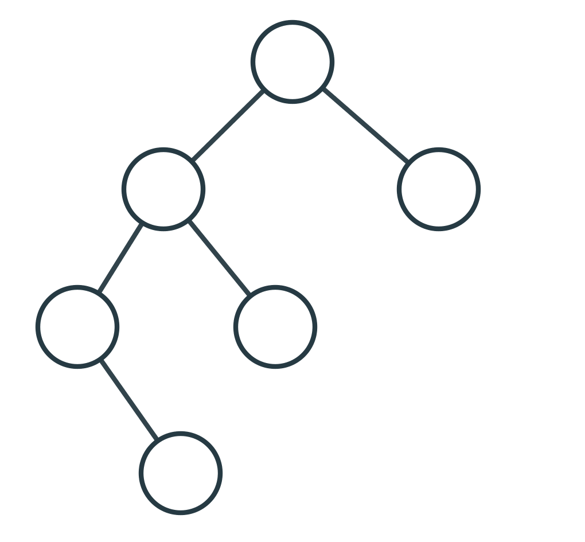

数据结构
2023-05
二叉树的遍历和线索二叉树已知一棵二叉树的树形如下图所示，若其后序遍历序列为 f, d, b, e, c, a，则其先（前）序遍历序列是（ ）。

答案
5
答案：A
本题讲解：由树形和后序序列推前序序列
答案：A（a, e, d, f, b, c）。前序 = 根 → 左子树 → 右子树，对着树形按这个次序走一遍即可；后序序列用来核对口型。
第一步：认清树形
由题图：根 a；a 的左孩子是 e、右孩子是 c；e 的左孩子是 d、右孩子是 b；d 只有一个孩子 f。
第二步：按前序规则走一遍
- 访问根 a；
- 进入左子树：先访问子树根 e；
- e 的左子树：访问 d，d 的孩子只有 f，访问 f；
- e 的右子树：访问 b；
- 左子树全部完成，访问右子树根 c。
前序序列 = a, e, d, f, b, c。
第三步：用后序核验
后序 = 左子树 → 右子树 → 根：d 的子树先出 f、d；e 的子树接着出 f, d, b, e；右子树出 c；最后根 a —— 恰为 f, d, b, e, c, a，与题干一致 ✓。
易错点
- 把 b 当成 a 的孩子：树形里 b 挂在 e 的右侧，前序中 b 紧跟在 f 之后。
- 左右子树顺序颠倒：前序必须先走完整个左子树再走右子树，选项 B 的 c 排第二正是「先右后左」的错。
- 拿后序倒着硬套：后序最后一位才是根；从后往前拆要换规则，远不如按图走前序稳。
前序「根左右」，后序「左右根」；树形在手，按规则逐个点亮结点即可。